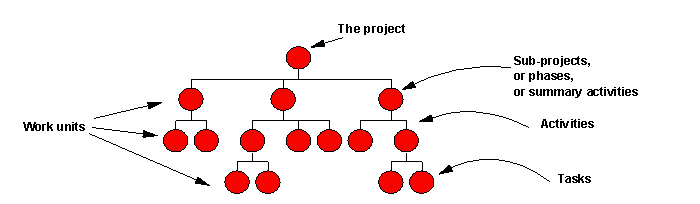
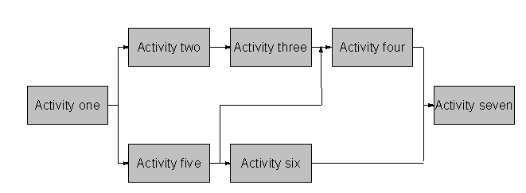

| Artifact: Work Breakdown Structure (WBS) (ENG 362) |
 |
|
| The purpose of the WBS is to define and structure all the activities that the project team must complete and so to provide a basis upon which the work can be scheduled. |
| Main Description | The Work Breakdown Structure (WBS) is a hierarchical presentation of all the activities that the project team must complete. Among the descending levels of composition that are represented in a WBS, those at the top represent a partition into broad, or “high-level”, activity groups. Therefore, the term “high-level WBS” addresses that part of a WBS which represents the first levels of decomposition. The hierarchy has as many levels as are required to structure the work. Top-level activities are broken down into second level activities that in turn are broken down into third level activities and so on. The term "work unit" is a generic term used to designate any item (phase, activity, or task), at any level in the WBS. Note that, although they can be both represented by hierarchical lists, the WBS and the Product Breakdown Structure (PBS) are two very different things. The PBS is a decomposition of the solution into components and elements that the project will make, reuse, or buy; while the WBS shows all the activities that the project team performs.  |
||||||||||||||||||||||||||||||||||||||||||
|---|---|---|---|---|---|---|---|---|---|---|---|---|---|---|---|---|---|---|---|---|---|---|---|---|---|---|---|---|---|---|---|---|---|---|---|---|---|---|---|---|---|---|---|
| Brief Outline | The structure of the WBS is comprised of two components - the WBS structure and a network diagram of the activities. The WBS structure component is illustrated in the following diagram.
|
||||||||||||||||||||||||||||||||||||||||||
| Notation |
The network diagram is represented below, where each rectangle represents an activity and each arrow represents a dependency between activities.  |
| Templates |
|---|
The WBS is developed by analysis of two main sources: the technical method work patterns and possibly the network diagram resulting from the solution PBS. There are many other activities, such as project management activities, which may be identified and then decomposed as necessary, largely by applying experience and project management work patterns. At the bottom of the hierarchy, the activities are small enough to be organized into work units and scheduled. The WBS is created during Planning and may be extended during Starting and, perhaps, at later stages in the project. Although it can be produced manually, the WBS is usually documented using project management software. The accuracy and completeness of the WBS is validated by inspection and by ensuring its consistency with the other project management plans, in particular, the PBS and the OBS. |
| Impact of not having | Without a WBS, the project team does not have a clear definition of the work that it is required to carry out. |
|---|---|
| Reasons for not needing | The WBS is a mandatory project management work product. |
| © Copyright IBM Corp. 1987, 2012 All Rights Reserved Property of IBM These materials are intended only for use as part of an IBM engagement |